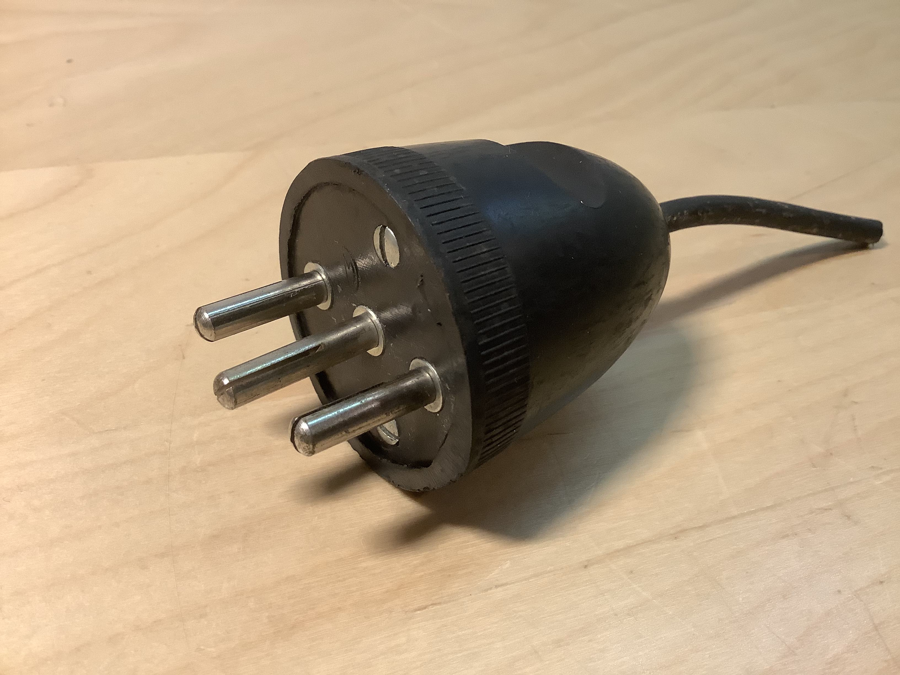
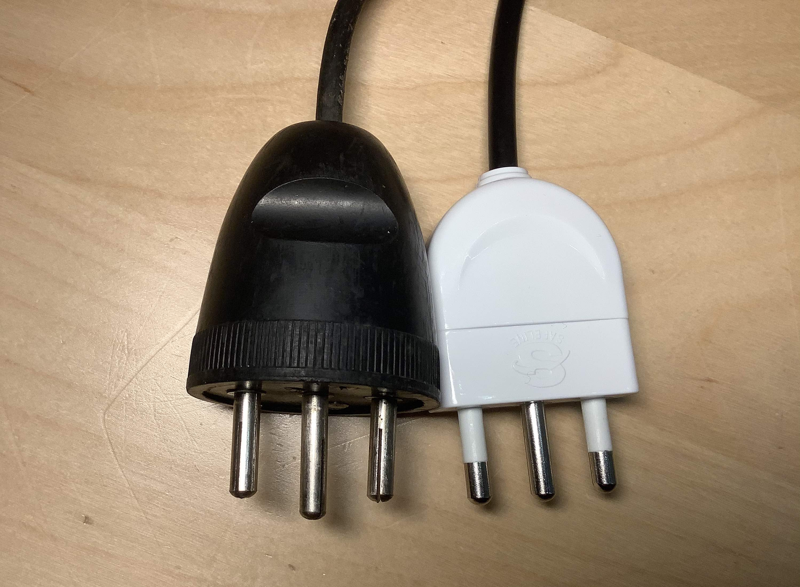
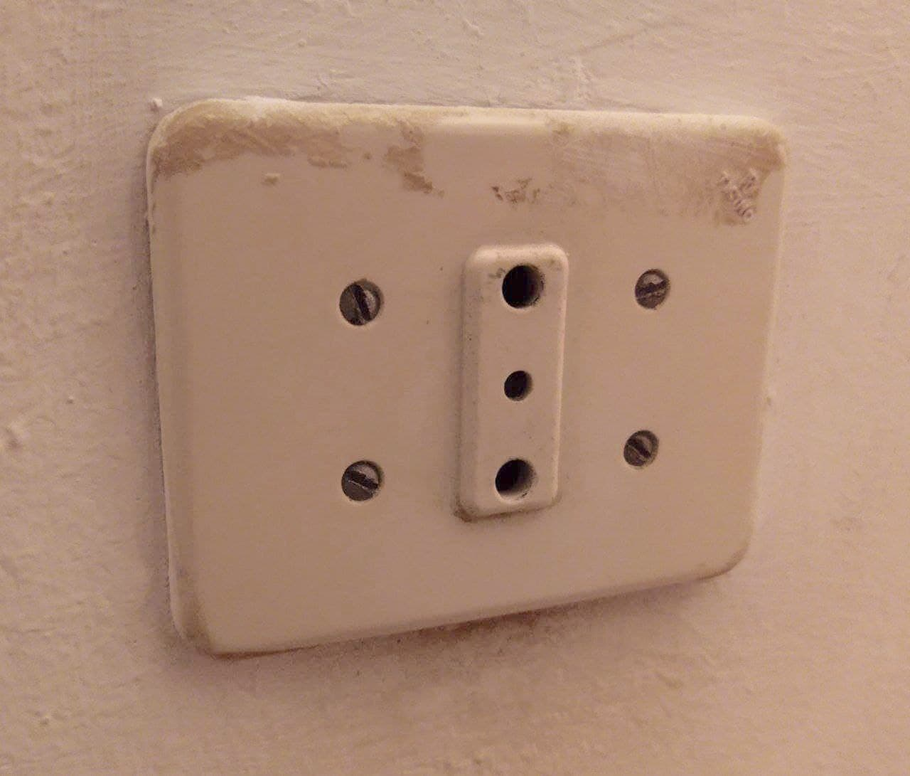
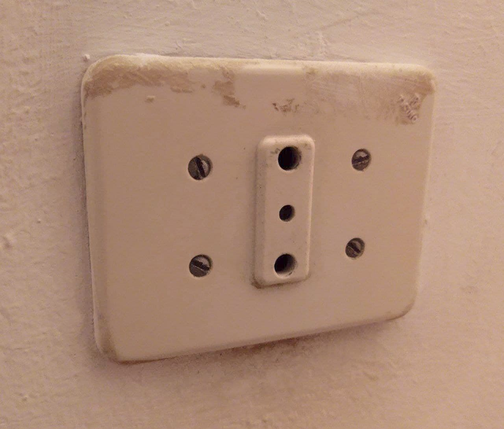

Vintage plugs and sockets
Round 10A plug
This is an old plug that was connected to a tube radio from the 50s (it was probably the plug that originally came with that radio). It has since been replaced with something more modern (and much safer!), but I kept it in my drawer because it's fairly interesting to look at, the design and shape of it is completely different from the more modern plugs you can buy today.


Round 16A type-L plug
This is an old 16A type L plug I found on an extension cord. There are two interesting things about it: the first thing is the shape of it, it's definitely very unusual, and it makes the plug take up a lot of space. The second thing is the fact that the earth pin on it is longer than the other pins - a safety feature which means that the device will be earthed before it is powered on. This is a feature commonly found in plugs from other countries, but it's not a thing with Italian plugs, as you can see in one of the pictures, so this plug having this feature is definitely unusual.
 {kind=link}
{kind=link}
Rewireable plugs and sockets by BTicino
These rewireable plugs were made by the Italian company BTicino and are definitely interesting for their lack of safety
features compared to more modern plugs.
The first plug is a 2-prong (so, ungrounded) 16A plug, with no safety sleeving - this makes it extremely easy for
someone to accidentally touch the live pins while the plug is half-way into a socket.
The two sockets (one is a 16A and the other is a 10A), on the other hand, lack protective shutters, which means that
you can easily place a metal object in the live pins and that you can also do dangerous things like connecting the earth
pin of an appliance into the live pins of the socket.
Additionally, the contacts inside of them are almost right on the surface of the socket, which means that the pins
of a plug become live as soon as you've started to insert it into the socket - and if you use one of the plugs
without safety sleeving then you can leave the majority of the surface of the pins live for you to touch.
Definitely not great!
{kind=link}
{kind=link}

Old sockets by BTicino
These are old sockets made by BTicino.
They're original to the house they're in (which is from the 50s) and they're all still in service today.
They're old enough to lack the safety features found in all modern sockets, such as protective shutters, though some
of them seem to, at least, have an earth pin (not that it matters a lot since that house doesn't have an earthing system!).
The 16A socket, in the last picture, is interesting because the earth hole on it is smaller than it normally is:
so most 16A plugs probably won't fit in it because of this.
Of couse this isn't a problem to anyone with a Dremel ;) and heh, I wish I was joking, but I've actually seen plenty
of plugs that have had their earth pin cut off (probably because of reasons like this).

 

{kind=link}